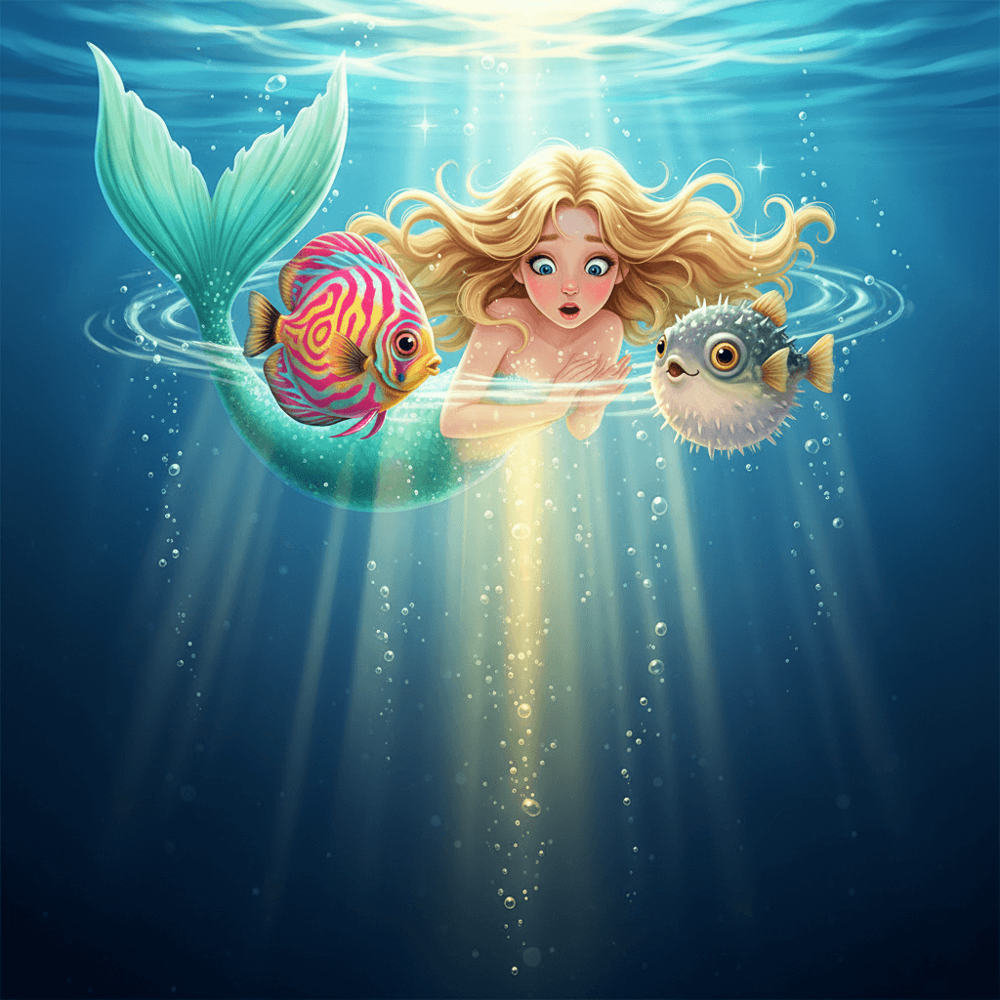
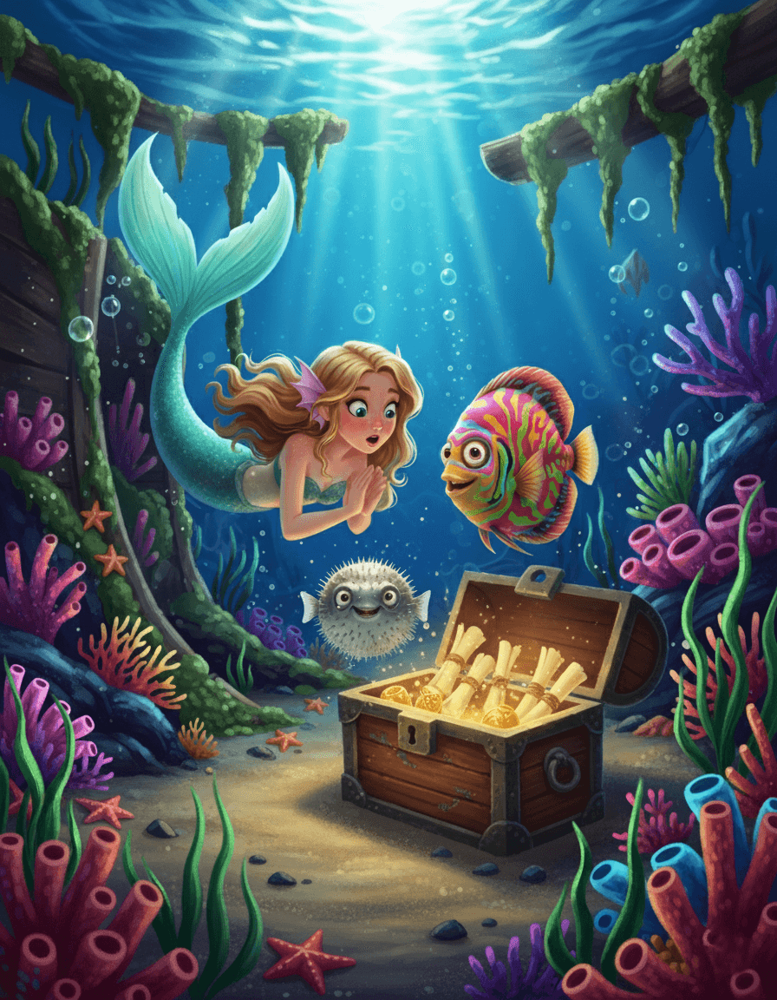
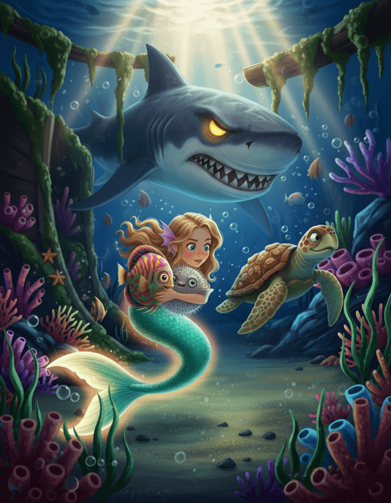
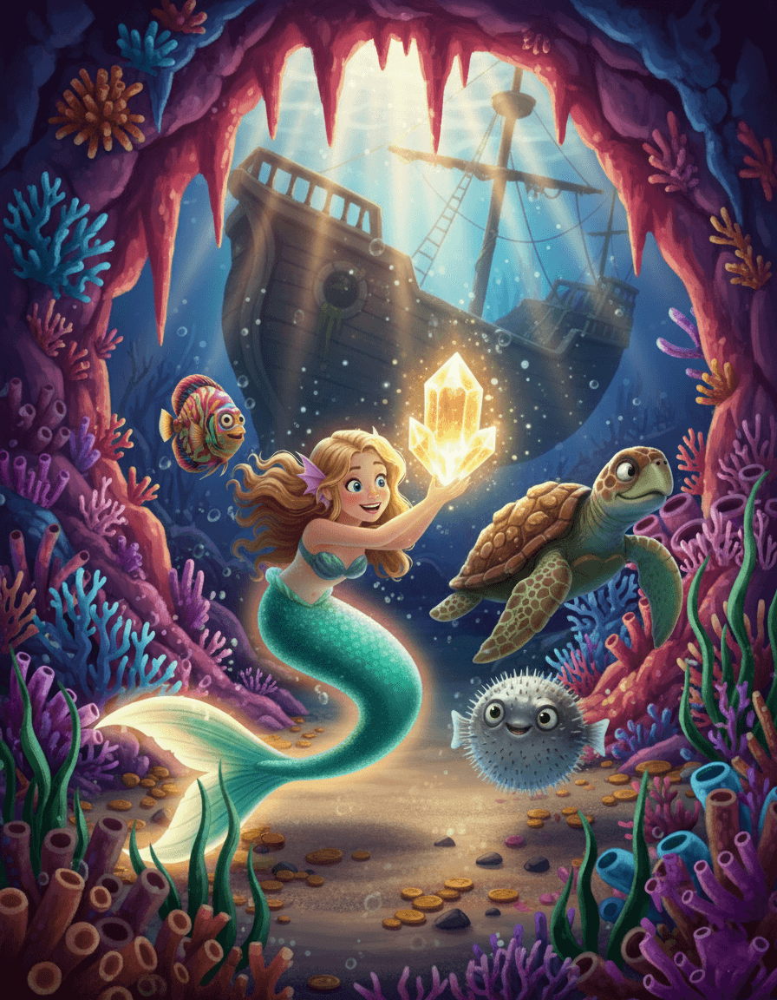
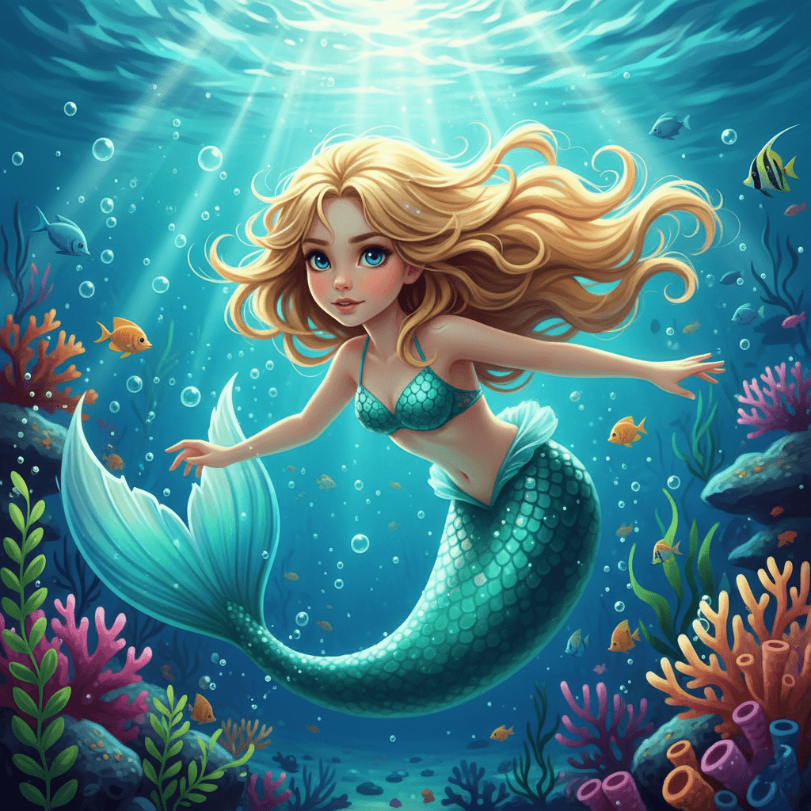
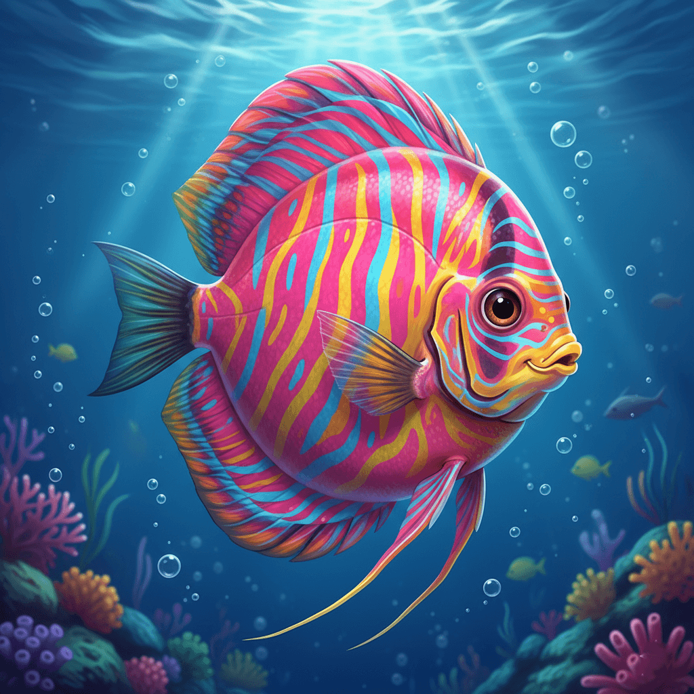
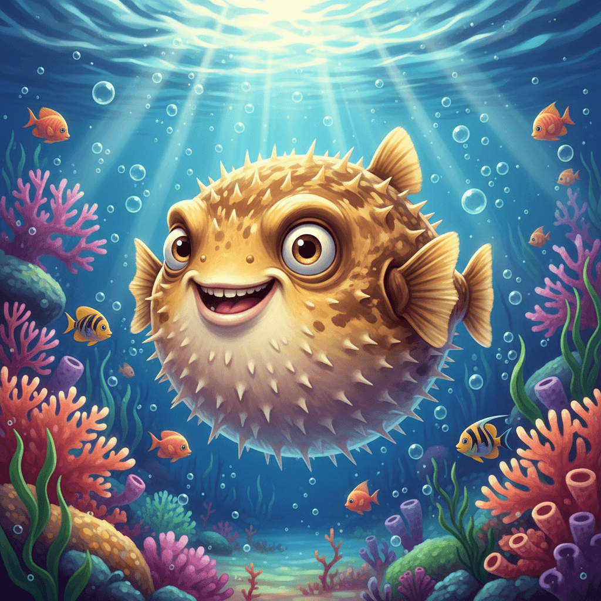
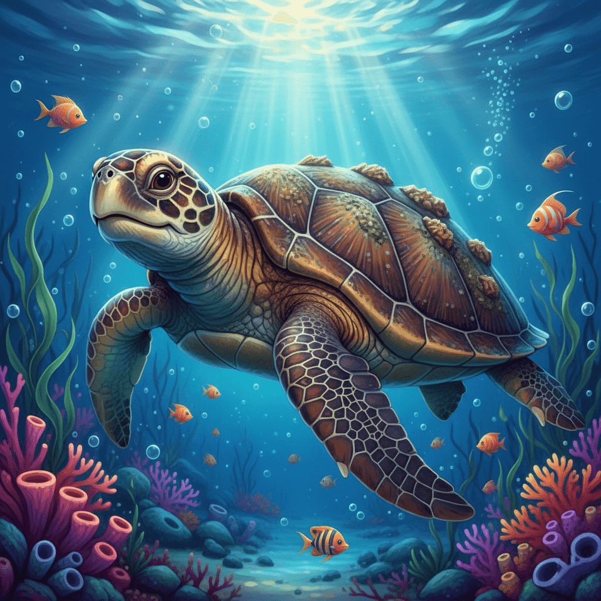

Продолжение истории о дружбе, смелости и открытиях под водой
Сюжет
Таинственный Свет
После того, как Лиа научилась плавать, она с Фэйри и Доном отправилась глубже в океан. Однажды они заметили странный мерцающий свет на дне. "Что это может быть?" — шепотом спросила Лиа, её глаза блестели от любопытства. Друзья решили нырнуть глубже, чтобы раскрыть тайну.

Затонувший Корабль
Свет исходил от древнего затонувшего корабля, покрытого водорослями и кораллами. Внутри они нашли карты сокровищ и старые артефакты. Фэйри грациозно плыла впереди, освещая путь, а Дон раздувался, чтобы отпугивать любопытных рыб. "Это как настоящая охота за сокровищами!" — воскликнул Дон.
✨ Что говорят друзья?

Ловушка Акулы
Вдруг из тени выплыла огромная акула, охраняющая корабль. Её зубы сверкали, а глаза горели. Лиа замерла от страха, но Фэйри быстро придумала план: "Используй свою чешую, чтобы ослепить её светом!" Дон раздулся до гигантских размеров, отвлекая хищника.

Спасение Друга
Акула схватила Дона, но Лиа, собрав всю смелость, нырнула и ударила акулу своим хвостом прямо в глаз. Ослепленная, акула отпустила Дона. Но всего через мгновение хищные зубы вновь смыкались у самых хвостов друзей. Внезапно погоня прервалась: морская сеть остановила охотницу. Отважная черепашка зацепила край сети за коралловый риф и помогла друзьям спастись. Так компания исследователей океана пополнилась новым другом — молодой морской черепашкой по имени Тори.
✨ Что говорит Тори?
Настоящее Сокровище
В конце они нашли не золото, а древний кристалл, очищающий океан от загрязнений. Лиа вернулась домой героиней, поняв, что настоящие сокровища — это друзья и чистый океан. Король и Королева гордились ею.

Познакомься с героями
В этом приключении Лиа и её друзья встречают новых союзников в океане. Нажми на карточки, чтобы узнать больше о них и их ролях в истории.

🧜♀️ Лиа

🐠 Фэйри

🐡 Дон

🐢 Тори
Лиа
Храбрая русалочка, которая теперь исследует океан и защищает друзей своей смелостью и светящейся чешуёй.
Фэйри
Грациозная рыбка-дискус, всегда готовая к приключениям и хитрым планам.
Дон
Забавный фугу, который раздувается в моменты опасности, становясь настоящим героем.
Тори
Мудрая морская черепаха, знающая океанские тайны и помогающая в трудную минуту.
5 Интересных Фактов об Океане
Узнай больше о мире, где живут Лиа и её друзья!
Океаны покрывают более 70% поверхности Земли и содержат 97% всей воды на планете!
Самая глубокая точка океана — Марианская впадина, глубиной около 11 километров, где давление огромно!
Коралловые рифы — это "тропические леса" океана, дом для четверти всех морских видов!
Акулы существуют уже 400 миллионов лет — старше динозавров!
Океаны производят более половины кислорода на Земле благодаря фитопланктону!
Что было дальше?
Хочешь узнать о новых приключениях Лиа в подводном мире? Нажми на кнопку!
Диалог друзей
Фэйри: "Смотрите, здесь старая карта! Она ведет к сокровищу."
Дон: "Я раздуваюсь на всякий случай — вдруг там ловушки!"
Лиа: "Вместе мы справимся с чем угодно!"
Диалог Тори
Тори: "Молодцы, что не бросили друга. Океан учит нас держаться вместе."